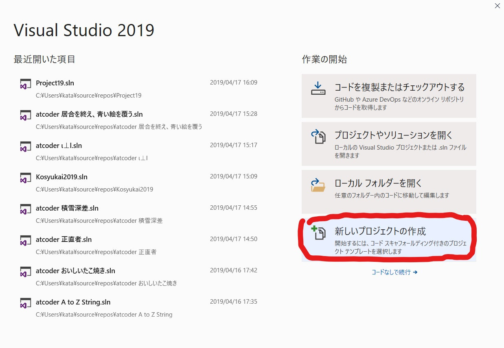
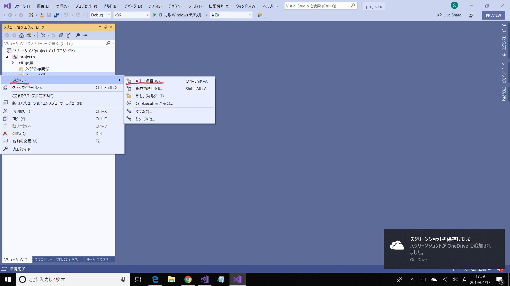
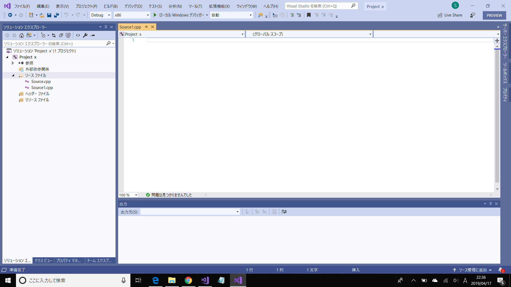

VisualStudio2019のプロジェクト作成
プロジェクト作成とソースファイルの作成方法について書いておきます。分からなくなったらこのページを開いてください。
1.プロジェクト作成
VisualStudio2019(以降VS)を立ち上げると最初に上のような画面が出てきます。この画面の右下の辺りにある「新しいプロジェクトの作成」(赤丸)をクリックしてください。
すると上のようなウィンドウが出てきます。左上の赤丸から「Visual C++」,「空のプログラム」の順にクリックし、下の「名前」(緑枠)でプロジェクト名を決めて「OK」をクリックします。今回はtest_projectという名前にしました。
これでプロジェクトの作成は完了です。次はソースファイルの追加についてです。
2.ソースファイルの追加

ソリューションエクスプローラーにある「ソースファイル」(青矢印)を右クリックし、「追加」から「新しい項目」をクリックします。
ソリューションエクスプローラーが出てこない場合は下の画像のように表示から「ソリューションエクスプローラー」をクリックして表示させてください。
新しい項目をクリックすると上のようなウィンドウが出てきます。左上の赤丸から「Visual C++」,「C++ファイル」の順にクリックし、下の「名前」(緑枠)でソースファイル名を決めて「OK」をクリックします。今回はmain.cppという名前にしました。
以上でソースファイルの作成は完了です。